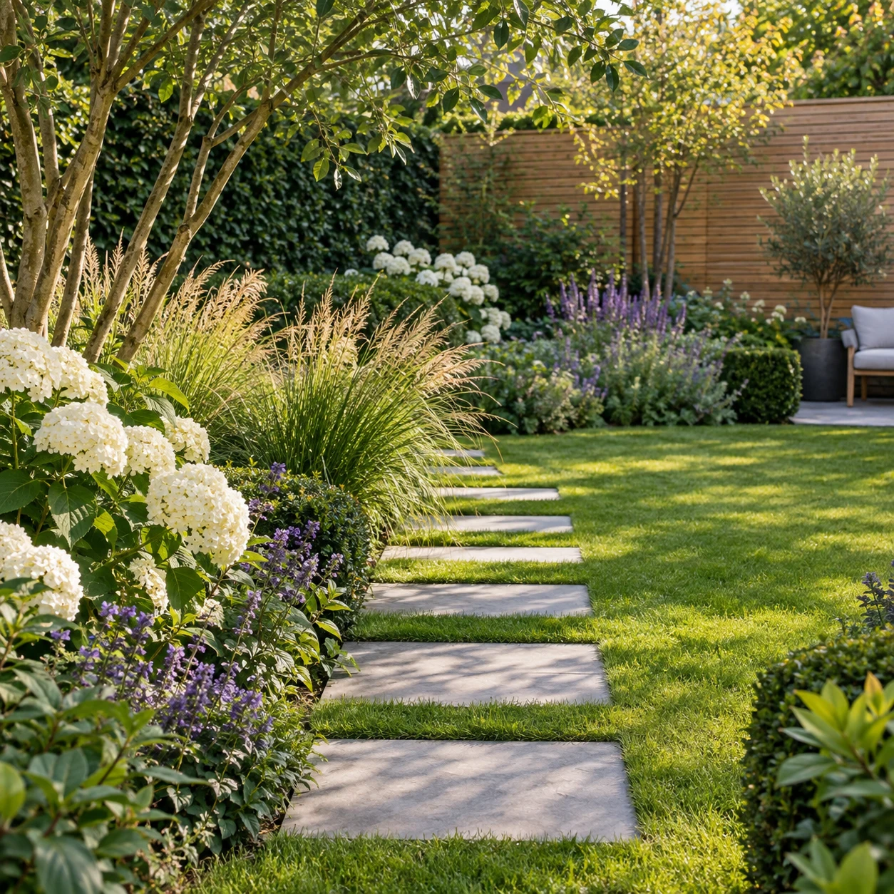
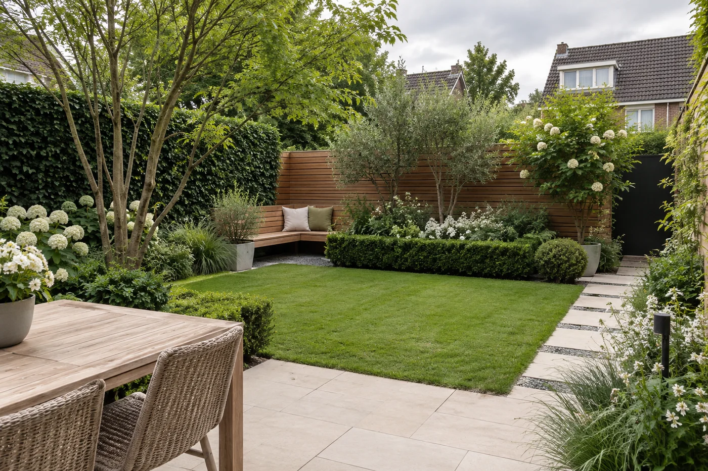
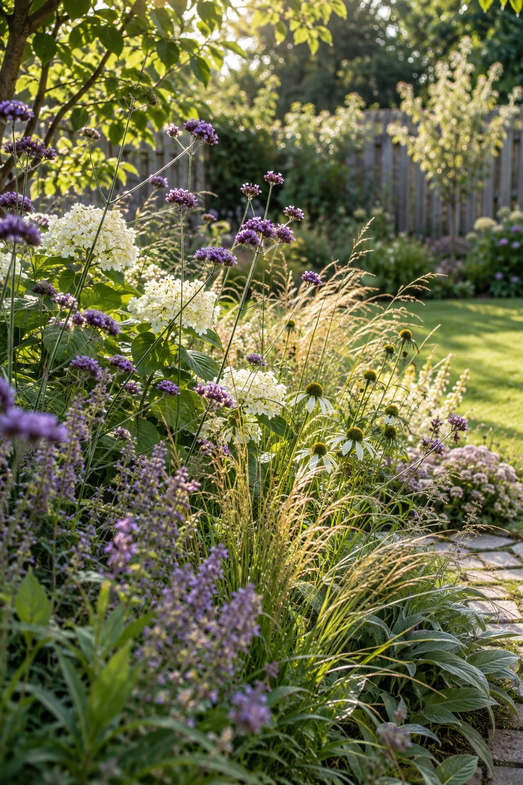
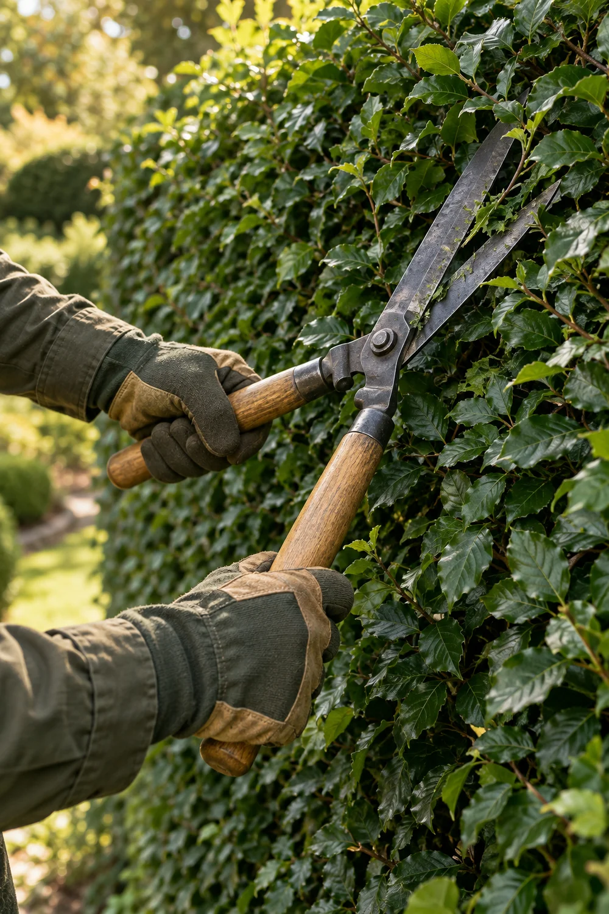

Tuinman Jesse
Een tuin omin te leven.
Jij geniet van buiten.
Jesse geeft je tuin de aandacht die het verdient.
Een kijkje in het groen
Buiten wordt bijzonder.
Voorbeeldfoto’s — hier komen Jesse’s eigen tuinen.



01 / Tuinonderhoud
Van mooi groen
naar jouw tuin.
Een verzorgd gazon, een strakke haag en borders die weer tot hun recht komen. Het begint met een beetje aandacht.
Ontdek wat ik voor je kan doen01 / Wat ik voor je kan doen
Goed voor je tuin.
Fijn voor jou.
Van even bijwerken tot een flinke opfrisbeurt. Aandacht voor wat jouw tuin nodig heeft.

01Tuinonderhoud
Een tuin groeit door. Met aandacht voor het gazon, onkruid en het groen rondom je huis blijft alles prettig en verzorgd.
Bespreek jouw tuin02Snoeiwerk
Een haag weer strak, een struik weer in vorm. Verzorgd snoeiwerk geeft je tuin licht, lucht en ruimte om verder te groeien.
Bespreek het snoeiwerk03Tuinverzorging
Het zit ’m ook in de kleine dingen. Een nette border, aandacht voor je planten en de verzorging die je groen op dat moment nodig heeft.
Vertel over je tuinWaar kan jouw tuin wat aandacht gebruiken?
Stuur Jesse gerust een berichtje.
02 / Wie ben ik
Jesse.
Voor jouw tuin.
Van een strak gesnoeide haag tot een frisse, verzorgde tuin. Jesse helpt je met het groen rondom je huis. Vertel wat je wilt aanpakken, dan begint het bij een gesprek.
03 / Even kennismaken
Wat kan ik voor
jouw tuin doen?
Vertel wat je wilt aanpakken. Een grote opfrisbeurt of gewoon even bijwerken: stuur Jesse een berichtje.
06 29 19 48 22